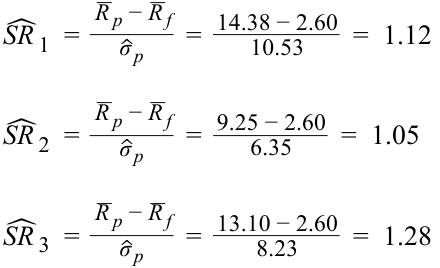

Learning Module 2 Portfolio Risk and Return: Part II - Part 4: Summary
Volume 9: Portfolio Management
Learning Module 2 Portfolio Risk and Return: Part II
Part 4/4: Summary (PDF Pages 116–130)
Tập 9: Quản lý Danh mục Đầu tư (Volume 9: Portfolio Management)
Học phần 2: Rủi ro và Tỷ suất sinh lợi của Danh mục Đầu tư: Phần II (Learning Module 2: Portfolio Risk and Return: Part II)
Phần 4/4: Tóm tắt & Bài tập Thực hành (Summary & Practice Problems) (Trang PDF 116–130)
= 0.0171
$= 0.0171$
Stock Q’s nonsystematic variance = (0.25 × 0.25) – (1.2 × 1.2 × 0.18 × 0.18) = 0.0625 – 0.0467
Phương sai phi hệ thống của Cổ phiếu Q $= (0.25 \times 0.25) - (1.2 \times 1.2 \times 0.18 \times 0.18) = 0.0625 - 0.0467$
= 0.0158
$= 0.0158$
Stock R’s nonsystematic variance = (0.23 × 0.23) – (1.1 × 1.1 × 0.18 × 0.18) = 0.0529 – 0.0392
Phương sai phi hệ thống của Cổ phiếu R $= (0.23 \times 0.23) - (1.1 \times 1.1 \times 0.18 \times 0.18) = 0.0529 - 0.0392$
= 0.0137
$= 0.0137$
- Should any of the three stocks be included in the portfolio? If so, which stock should have the highest weight in the portfolio?
- Có cổ phiếu nào trong ba cổ phiếu trên nên được đưa vào danh mục đầu tư không? Nếu có, cổ phiếu nào nên có tỷ trọng cao nhất trong danh mục đầu tư?
Solution:
Lời giải (Solution):
Stock P has a negative α and should not be included in the portfolio, unless a negative position can be assumed through short selling. Stocks Q and R have a positive α; therefore, they should be included in the portfolio with positive weights.
Cổ phiếu P có hệ số $\alpha$ âm và không nên được đưa vào danh mục đầu tư, trừ khi có thể thực hiện một vị thế âm thông qua hoạt động bán khống (short selling). Cổ phiếu Q và R có hệ số $\alpha$ dương; do đó, chúng nên được đưa vào danh mục đầu tư với tỷ trọng dương.
The relative weight of Q is 0.04/0.0158 = 2.53.
Tỷ trọng tương đối của Q là $0.04 / 0.0158 = 2.53$.
The relative weight of R is 0.03/0.0137 = 2.19.
Tỷ trọng tương đối của R là $0.03 / 0.0137 = 2.19$.
Stock Q will have the largest weight among the nonmarket securities to be added to the portfolio. In relative terms, the weight of Q will be 15.5 percent greater than the weight of R (2.53/2.19 = 1.155). As the number of securities increases, the analysis becomes more complex. However, the contribution of each additional security toward improvement in the risk–return tradeoff will decrease and eventually disappear, resulting in a well-diversified portfolio.
Cổ phiếu Q sẽ có tỷ trọng lớn nhất trong số các chứng khoán ngoài thị trường (nonmarket securities) được thêm vào danh mục đầu tư. Xét về mặt tương đối, tỷ trọng của Q sẽ lớn hơn 15.5% so với tỷ trọng của R ($2.53 / 2.19 = 1.155$). Khi số lượng chứng khoán tăng lên, việc phân tích sẽ trở nên phức tạp hơn. Tuy nhiên, sự đóng góp của mỗi chứng khoán tăng thêm vào việc cải thiện sự đánh đổi rủi ro – tỷ suất sinh lợi (risk–return tradeoff) sẽ giảm dần và cuối cùng biến mất, mang lại kết quả là một danh mục đầu tư đã được đa dạng hóa tốt.
~~SUMMARY~~
TÓM TẮT (SUMMARY)
In this reading, we discussed the capital asset pricing model in detail and covered related topics such as the capital market line. The reading began with an interpretation of the CML, uses of the market portfolio as a passive management strategy, and leveraging of the market portfolio to obtain a higher expected return. Next, we discussed systematic and nonsystematic risk and why one should not expect to be compensated for taking on nonsystematic risk. The discussion of systematic and nonsystematic risk was followed by an introduction to beta and return-generating models. This broad topic was then broken down into a discussion of the CAPM and, more specifically, the relationship between beta and expected return. The final section included applications of the CAPM to capital budgeting, portfolio performance evaluation, and security selection. The highlights of the reading are as follows:
Trong bài đọc này, chúng ta đã thảo luận chi tiết về mô hình định giá tài sản vốn (CAPM) và đề cập đến các chủ đề liên quan như đường thị trường vốn (CML). Bài đọc bắt đầu bằng cách diễn giải đường CML, công dụng của danh mục thị trường như một chiến lược quản lý thụ động, và việc sử dụng đòn bẩy đối với danh mục thị trường để đạt được tỷ suất sinh lợi kỳ vọng cao hơn. Tiếp theo, chúng ta đã thảo luận về rủi ro hệ thống và rủi ro phi hệ thống cũng như lý do tại sao một nhà đầu tư không nên kỳ vọng được đền bù khi gánh chịu rủi ro phi hệ thống. Phần thảo luận về rủi ro hệ thống và rủi ro phi hệ thống được nối tiếp bằng phần giới thiệu về hệ số beta và các mô hình tạo tỷ suất sinh lợi. Chủ đề rộng lớn này sau đó được chia nhỏ thành cuộc thảo luận về CAPM và, cụ thể hơn, mối quan hệ giữa hệ số beta và tỷ suất sinh lợi kỳ vọng. Phần cuối cùng bao gồm các ứng dụng của CAPM vào hoạch định ngân sách vốn, đánh giá hiệu quả hoạt động của danh mục đầu tư, và lựa chọn chứng khoán. Những điểm nổi bật của bài đọc như sau:
-
The capital market line is a special case of the capital allocation line, where the efficient portfolio is the market portfolio.
-
Obtaining a unique optimal risky portfolio is not possible if investors are permitted to have heterogeneous beliefs because such beliefs will result in heterogeneous asset prices.
-
Đường thị trường vốn (capital market line – CML) là một trường hợp đặc biệt của đường phân bổ vốn (capital allocation line – CAL), trong đó danh mục hiệu quả chính là danh mục thị trường (market portfolio).
-
Việc thu được một danh mục rủi ro tối ưu duy nhất là không thể nếu các nhà đầu tư được phép có những niềm tin không đồng nhất (heterogeneous beliefs) bởi vì những niềm tin như vậy sẽ dẫn đến các mức giá tài sản không đồng nhất.
-
Investors can leverage their portfolios by borrowing money and investing in the market.
-
Systematic risk is the risk that affects the entire market or economy and is not diversifiable.
-
Nonsystematic risk is local and can be diversified away by combining assets with low correlations.
-
Beta risk, or systematic risk, is priced and earns a return, whereas nonsystematic risk is not priced.
-
The expected return of an asset depends on its beta risk and can be computed using the CAPM, which is given by E ( Ri ) = Rf + β i [ E ( Rm ) – Rf ].
-
The security market line is an implementation of the CAPM and applies to all securities, whether they are efficient or not.
-
Expected return from the CAPM can be used for making capital budgeting decisions.
-
Portfolios can be evaluated by several CAPM-based measures, such as the Sharpe ratio, the Treynor ratio, M2 , and Jensen’s alpha.
-
The SML can assist in security selection and optimal portfolio construction.
-
Các nhà đầu tư có thể sử dụng đòn bẩy (leverage) cho danh mục đầu tư của mình bằng cách vay tiền và đầu tư vào thị trường.
-
Rủi ro hệ thống (systematic risk) là rủi ro ảnh hưởng đến toàn bộ thị trường hoặc nền kinh tế và không thể đa dạng hóa được (not diversifiable).
-
Rủi ro phi hệ thống (nonsystematic risk) mang tính cục bộ và có thể được triệt tiêu thông qua đa dạng hóa bằng cách kết hợp các tài sản có độ tương quan thấp.
-
Rủi ro beta (beta risk), hay rủi ro hệ thống, được định giá (is priced) và mang lại tỷ suất sinh lợi, trong khi rủi ro phi hệ thống không được định giá.
-
Tỷ suất sinh lợi kỳ vọng của một tài sản phụ thuộc vào rủi ro beta của nó và có thể được tính toán bằng cách sử dụng mô hình CAPM, được cho bởi công thức $E(R_i) = R_f + \beta_i [E(R_m) - R_f]$.
-
Đường thị trường chứng khoán (security market line – SML) là một sự triển khai của CAPM và áp dụng cho tất cả các chứng khoán, bất kể chúng có hiệu quả hay không.
-
Tỷ suất sinh lợi kỳ vọng từ CAPM có thể được sử dụng để đưa ra các quyết định hoạch định ngân sách vốn (capital budgeting decisions).
-
Các danh mục đầu tư có thể được đánh giá bằng một số thước đo dựa trên CAPM, chẳng hạn như tỷ số Sharpe (Sharpe ratio), tỷ số Treynor (Treynor ratio), $M^2$, và alpha của Jensen (Jensen’s alpha).
-
Đường SML có thể hỗ trợ trong việc lựa chọn chứng khoán (security selection) và xây dựng danh mục đầu tư tối ưu (optimal portfolio construction).
By successfully understanding the content of this reading, you should feel comfortable decomposing total variance into systematic and nonsystematic variance, analyzing beta risk, using the CAPM, and evaluating portfolios and individual securities.
Bằng việc nắm vững nội dung của bài đọc này, bạn sẽ cảm thấy tự tin khi phân rã tổng phương sai thành phương sai hệ thống và phương sai phi hệ thống, phân tích rủi ro beta, sử dụng mô hình CAPM, cũng như đánh giá các danh mục đầu tư và từng chứng khoán riêng lẻ.
~~REFERENCES~~
TÀI LIỆU THAM KHẢO (REFERENCES)
-
Carhart, Mark. 1997. “On Persistence in Mutual Fund Performance.” Journal of Finance 52, vol. , no. 1:57–82. 10.2307/2329556
-
Fama, Eugene and Kenneth French. 1992. “The Cross-Section of Expected Stock Returns.” Journal of Finance 47, vol. , no. 2:427–466. 10.2307/2329112
-
Carhart, Mark. 1997. “On Persistence in Mutual Fund Performance.” Journal of Finance, vol. 52, no. 1: 57–82. 10.2307/2329556
-
Fama, Eugene và Kenneth French. 1992. “The Cross-Section of Expected Stock Returns.” Journal of Finance, vol. 47, no. 2: 427–466. 10.2307/2329112
~~PRACTICE PROBLEMS~~
BÀI TẬP THỰC HÀNH (PRACTICE PROBLEMS)
1. The line depicting the total risk and expected return of portfolio combinations of a risk-free asset and any risky asset is the:
1. Đường biểu diễn tổng rủi ro và tỷ suất sinh lợi kỳ vọng của các tổ hợp danh mục đầu tư gồm một tài sản phi rủi ro và bất kỳ tài sản rủi ro nào là:
-
A. security market line.
-
B. capital allocation line.
-
C. security characteristic line.
-
A. đường thị trường chứng khoán (security market line).
-
B. đường phân bổ vốn (capital allocation line).
-
C. đường đặc trưng chứng khoán (security characteristic line).
2. The portfolio of a risk-free asset and a risky asset has a better risk-return tradeoff than investing in only one asset type because the correlation between the risk-free asset and the risky asset is equal to:
2. Danh mục đầu tư gồm một tài sản phi rủi ro và một tài sản rủi ro có sự đánh đổi rủi ro – tỷ suất sinh lợi tốt hơn so với việc chỉ đầu tư vào một loại tài sản duy nhất bởi vì hệ số tương quan giữa tài sản phi rủi ro và tài sản rủi ro bằng:
-
A. −1.0.
-
B. 0.0.
-
A. $-1.0$.
-
B. $0.0$.
-
C. $1.0$.
C. 1.0.
3. Theo lý thuyết thị trường vốn, danh mục đầu tư tối ưu của một nhà đầu tư là sự kết hợp giữa một tài sản phi rủi ro và một tài sản rủi ro có:
3. With respect to capital market theory, an investor’s optimal portfolio is the combination of a risk-free asset and a risky asset with the highest:
-
A. tỷ suất sinh lợi kỳ vọng cao nhất.
-
B. đường bàng quan (indifference curve) cao nhất.
-
C. độ dốc đường phân bổ vốn cao nhất.
-
A. expected return.
-
B. indifference curve.
-
C. capital allocation line slope.
4. Highly risk-averse investors will most likely invest the majority of their wealth in:
4. Những nhà đầu tư rất ngại rủi ro (highly risk-averse investors) nhiều khả năng nhất sẽ đầu tư phần lớn tài sản của họ vào:
-
A. risky assets.
-
B. risk-free assets.
-
C. the optimal risky portfolio.
-
A. các tài sản rủi ro.
-
B. các tài sản phi rủi ro.
-
C. danh mục rủi ro tối ưu.
5. The capital market line (CML) is the graph of the risk and return of portfolio combinations consisting of the risk-free asset and:
5. Đường thị trường vốn (CML) là đồ thị biểu diễn rủi ro và tỷ suất sinh lợi của các tổ hợp danh mục đầu tư bao gồm tài sản phi rủi ro và:
-
A. any risky portfolio.
-
B. the market portfolio.
-
C. the leveraged portfolio.
-
A. bất kỳ danh mục rủi ro nào.
-
B. danh mục thị trường (the market portfolio).
-
C. danh mục sử dụng đòn bẩy (the leveraged portfolio).
6. Which of the following statements most accurately defines the market portfolio in capital market theory? The market portfolio consists of all:
6. Phát biểu nào sau đây định nghĩa chính xác nhất về danh mục thị trường trong lý thuyết thị trường vốn? Danh mục thị trường bao gồm tất cả:
-
A. risky assets.
-
B. tradable assets.
-
C. investable assets.
-
A. các tài sản rủi ro (risky assets).
-
B. các tài sản có thể giao dịch (tradable assets).
-
C. các tài sản có thể đầu tư (investable assets).
7. With respect to capital market theory, the optimal risky portfolio:
7. Theo lý thuyết thị trường vốn, danh mục rủi ro tối ưu:
- A. is the market portfolio.
- A. là danh mục thị trường (is the market portfolio).
| B.has the highest expected return. C.has the lowest expected variance. |
|---|
| 8.Relative to portfolios on the CML, any portfolio that plots above the CML is considered: |
| A.inferior. |
| B.inefficient. |
| C.unachievable. |
| 9.A portfolio on the capital market line with returns greater than the returns on the market portfolio represents a(n): |
| A.lending portfolio. |
| B.borrowing portfolio. |
| C.unachievable portfolio. |
| 10.With respect to the capital market line, a portfolio on the CML with returns less than the returns on the market portfolio represents a(n): |
| A.lending portfolio. |
| B.borrowing portfolio. |
| C.unachievable portfolio. |
| 11.Which of the following types of risk is_most likely_avoided by forming a diversi- fied portfolio? |
| A.Total risk. |
| B.Systematic risk. |
| C.Nonsystematic risk. |
| 12.Which of the following events is_most likely_an example of nonsystematic risk? |
| A.A decline in interest rates. |
| B.The resignation of chief executive officer. |
| C.An increase in the value of the US dollar. |
| 13.With respect to the pricing of risk in capital market theory, which of the follow- ing statements is_most accurate_? |
| A.All risk is priced. |
| B.Systematic risk is priced. |
| C.Nonsystematic risk is priced. |
| 14.The sum of an asset’s systematic variance and its nonsystematic variance of re- turns is equal to the asset’s: A.beta. |
| B. có tỷ suất sinh lợi kỳ vọng cao nhất. C. có phương sai kỳ vọng thấp nhất. |
|---|
| 8. So với các danh mục nằm trên đường CML, bất kỳ danh mục nào nằm phía trên đường CML đều được coi là: |
| A. kém ưu việt hơn (inferior). |
| B. không hiệu quả (inefficient). |
| C. không thể đạt được (unachievable). |
| 9. Một danh mục nằm trên đường thị trường vốn (CML) có tỷ suất sinh lợi lớn hơn tỷ suất sinh lợi của danh mục thị trường đại diện cho một: |
| A. danh mục cho vay (lending portfolio). |
| B. danh mục đi vay (borrowing portfolio). |
| C. danh mục không thể đạt được (unachievable portfolio). |
| 10. Liên quan đến đường thị trường vốn, một danh mục nằm trên đường CML có tỷ suất sinh lợi nhỏ hơn tỷ suất sinh lợi của danh mục thị trường đại diện cho một: |
| A. danh mục cho vay (lending portfolio). |
| B. danh mục đi vay (borrowing portfolio). |
| C. danh mục không thể đạt được (unachievable portfolio). |
| 11. Loại rủi ro nào sau đây nhiều khả năng nhất có thể tránh được bằng cách hình thành một danh mục đầu tư đa dạng hóa? |
| A. Tổng rủi ro (Total risk). |
| B. Rủi ro hệ thống (Systematic risk). |
| C. Rủi ro phi hệ thống (Nonsystematic risk). |
| 12. Sự kiện nào sau đây nhiều khả năng nhất là một ví dụ về rủi ro phi hệ thống? |
| A. Lãi suất sụt giảm. |
| B. Giám đốc điều hành (CEO) từ chức. |
| C. Giá trị của đồng đô la Mỹ tăng lên. |
| 13. Liên quan đến việc định giá rủi ro trong lý thuyết thị trường vốn, phát biểu nào sau đây là chính xác nhất? |
| A. Tất cả rủi ro đều được định giá. |
| B. Rủi ro hệ thống được định giá (Systematic risk is priced). |
| C. Rủi ro phi hệ thống được định giá. |
| 14. Tổng của phương sai hệ thống và phương sai phi hệ thống của tỷ suất sinh lợi của một tài sản bằng với ... của tài sản đó: A. hệ số beta. |
-
B. total risk.
-
C. total variance.
-
B. tổng rủi ro (total risk).
-
C. tổng phương sai (total variance).
The following information relates to questions 15-17
Thông tin sau đây liên quan đến các câu hỏi 15–17
An analyst gathers the following information:
Một nhà phân tích thu thập các thông tin sau:
| Security | Expected Annual Return (%) |
Expected Standard Deviation (%) |
Correlation between Security and the Market |
|---|---|---|---|
| Security 1 | 11 | 25 | 0.6 |
| Security 2 | 11 | 20 | 0.7 |
| Security 3 | 14 | 20 | 0.8 |
| Market | 10 | 15 | 1.0 |
| Chứng khoán (Security) | Tỷ suất sinh lợi Hàng năm Kỳ vọng (Expected Annual Return) (%) | Độ lệch chuẩn Kỳ vọng (Expected Standard Deviation) (%) | Hệ số tương quan giữa Chứng khoán và Thị trường (Correlation between Security and the Market) |
|---|---|---|---|
| Chứng khoán 1 | 11 | 25 | 0.6 |
| Chứng khoán 2 | 11 | 20 | 0.7 |
| Chứng khoán 3 | 14 | 20 | 0.8 |
| Thị trường (Market) | 10 | 15 | 1.0 |
15. Which security has the highest total risk?
15. Chứng khoán nào có tổng rủi ro cao nhất?
-
A. Security 1.
-
B. Security 2.
-
C. Security 3.
-
A. Chứng khoán 1.
-
B. Chứng khoán 2.
-
C. Chứng khoán 3.
16. Which security has the highest beta measure?
16. Chứng khoán nào có thước đo hệ số beta cao nhất?
-
A. Security 1.
-
B. Security 2.
-
C. Security 3.
-
A. Chứng khoán 1.
-
B. Chứng khoán 2.
-
C. Chứng khoán 3.
17. Which security has the least amount of market risk?
17. Chứng khoán nào có lượng rủi ro thị trường (market risk) ít nhất?
-
A. Security 1.
-
B. Security 2.
-
C. Security 3.
-
A. Chứng khoán 1.
-
B. Chứng khoán 2.
-
C. Chứng khoán 3.
18. With respect to return-generating models, the intercept term of the market model is the asset’s estimated:
18. Liên quan đến các mô hình tạo tỷ suất sinh lợi, số hạng hệ số chặn (intercept term) của mô hình thị trường là ... ước lượng của tài sản:
-
A. beta.
-
B. alpha.
-
C. variance.
-
A. hệ số beta.
-
B. hệ số alpha.
-
C. phương sai.
19. With respect to return-generating models, the slope term of the market model is an estimate of the asset’s:
19. Liên quan đến các mô hình tạo tỷ suất sinh lợi, số hạng hệ số góc (slope term) của mô hình thị trường là một ước lượng về ... của tài sản:
- A. total risk.
- A. tổng rủi ro.
-
B. systematic risk.
-
C. nonsystematic risk.
-
B. rủi ro hệ thống (systematic risk).
-
C. rủi ro phi hệ thống.
20. Liên quan đến các mô hình tạo tỷ suất sinh lợi, phát biểu nào sau đây là chính xác nhất? Các mô hình tạo tỷ suất sinh lợi được sử dụng để ước tính trực tiếp:
20. With respect to return-generating models, which of the following statements is most accurate ? Return-generating models are used to directly estimate the: A. expected return of a security. B. weights of securities in a portfolio.
-
A. tỷ suất sinh lợi kỳ vọng của một chứng khoán.
-
B. tỷ trọng của các chứng khoán trong một danh mục đầu tư.
-
C. các tham số của đường thị trường vốn.
- C. parameters of the capital market line.
21. Theo lý thuyết thị trường vốn, hệ số beta trung bình của tất cả các tài sản trên thị trường là:
21. With respect to capital market theory, the average beta of all assets in the market is:
-
A. nhỏ hơn 1.0.
-
B. bằng 1.0.
-
C. lớn hơn 1.0.
22. Liên quan đến mô hình định giá tài sản vốn (CAPM), yếu tố quyết định chính đối với tỷ suất sinh lợi kỳ vọng của một tài sản riêng lẻ là:
-
A. less than 1.0.
-
B. equal to 1.0. C. greater than 1.0.
-
A. hệ số beta của tài sản (asset’s beta).
-
B. phần bù rủi ro thị trường.
-
C. độ lệch chuẩn của tài sản.
23. Liên quan đến mô hình định giá tài sản vốn (CAPM), giá trị beta nào sau đây của một tài sản nhiều khả năng nhất sẽ dẫn đến tỷ suất sinh lợi kỳ vọng cho tài sản đó thấp hơn lãi suất phi rủi ro?
22. With respect to the capital asset pricing model, the primary determinant of expected return of an individual asset is the:
-
A. $-0.5$
-
B. $0.0$
-
C. $0.5$
- A. asset’s beta. B. market risk premium. C. asset’s standard deviation.
24. Liên quan đến mô hình định giá tài sản vốn (CAPM), phần bù rủi ro thị trường (market risk premium):
23. With respect to the capital asset pricing model, which of the following values of beta for an asset is most likely to have an expected return for the asset that is less than the risk-free rate?
-
A. nhỏ hơn tỷ suất sinh lợi vượt trội của thị trường (excess market return).
-
B. bằng với tỷ suất sinh lợi vượt trội của thị trường.
-
C. lớn hơn tỷ suất sinh lợi vượt trội của thị trường.
25. Đồ thị của mô hình định giá tài sản vốn (CAPM) là:
-
A. −0.5 B. 0.0 C. 0.5
-
24. With respect to the capital asset pricing model, the market risk premium is: A. less than the excess market return. B. equal to the excess market return. C. greater than the excess market return.
-
25. The graph of the capital asset pricing model is the: A. capital market line. B. security market line. C. security characteristic line.
-
A. đường thị trường vốn (capital market line).
-
B. đường thị trường chứng khoán (security market line).
-
C. đường đặc trưng chứng khoán (security characteristic line).
26. Theo lý thuyết thị trường vốn, các tài sản riêng lẻ được định giá đúng (correctly priced) có thể được biểu diễn trên:
26. With respect to capital market theory, correctly priced individual assets can be plotted on the: A. capital market line.
- A. đường thị trường vốn.
-
B. security market line.
-
C. capital allocation line.
-
B. đường thị trường chứng khoán (security market line).
-
C. đường phân bổ vốn.
The following information relates to questions 27-30
Thông tin sau đây liên quan đến các câu hỏi 27–30
An analyst gathers the following information:
Một nhà phân tích thu thập các thông tin sau:
| Security | Expected Standard Deviation (%) |
Beta |
|---|---|---|
| Security 1 | 25 | 1.50 |
| Security 2 | 15 | 1.40 |
| Security 3 | 20 | 1.60 |
| Chứng khoán (Security) | Độ lệch chuẩn Kỳ vọng (Expected Standard Deviation) (%) | Hệ số Beta (Beta) |
|---|---|---|
| Chứng khoán 1 | 25 | 1.50 |
| Chứng khoán 2 | 15 | 1.40 |
| Chứng khoán 3 | 20 | 1.60 |
27. With respect to the capital asset pricing model, if the expected market risk premium is 6% and the risk-free rate is 3%, the expected return for Security 1 is closest to:
27. Liên quan đến mô hình định giá tài sản vốn (CAPM), nếu phần bù rủi ro thị trường kỳ vọng là 6% và lãi suất phi rủi ro là 3%, tỷ suất sinh lợi kỳ vọng của Chứng khoán 1 gần nhất với:
-
A. 9.0%.
-
B. 12.0%.
-
C. 13.5%.
-
A. 9.0%.
-
B. 12.0%.
-
C. 13.5%.
28. With respect to the capital asset pricing model, if expected return for Security 2 is equal to 11.4% and the risk-free rate is 3%, the expected return for the market is closest to:
28. Liên quan đến mô hình định giá tài sản vốn (CAPM), nếu tỷ suất sinh lợi kỳ vọng của Chứng khoán 2 bằng 11.4% và lãi suất phi rủi ro là 3%, tỷ suất sinh lợi kỳ vọng của thị trường gần nhất với:
-
A. 8.4%.
-
B. 9.0%.
-
C. 10.3%.
-
A. 8.4%.
-
B. 9.0%.
-
C. 10.3%.
29. With respect to the capital asset pricing model, if the expected market risk premium is 6% the security with the highest expected return is:
29. Liên quan đến mô hình định giá tài sản vốn (CAPM), nếu phần bù rủi ro thị trường kỳ vọng là 6% thì chứng khoán có tỷ suất sinh lợi kỳ vọng cao nhất là:
-
A. Security 1.
-
B. Security 2.
-
C. Security 3.
-
A. Chứng khoán 1.
-
B. Chứng khoán 2.
-
C. Chứng khoán 3.
30. With respect to the capital asset pricing model, a decline in the expected market return will have the greatest impact on the expected return of:
30. Liên quan đến mô hình định giá tài sản vốn (CAPM), sự sụt giảm trong tỷ suất sinh lợi kỳ vọng của thị trường sẽ có tác động lớn nhất đến tỷ suất sinh lợi kỳ vọng của:
-
A. Security 1.
-
B. Security 2.
-
C. Security 3.
-
A. Chứng khoán 1.
-
B. Chứng khoán 2.
-
C. Chứng khoán 3.
31. With respect to capital market theory, which of the following statements best describes the effect of the homogeneity assumption? Because all investors have the same economic expectations of future cash flows for all assets, investors will invest in:
31. Theo lý thuyết thị trường vốn, phát biểu nào sau đây mô tả đúng nhất tác động của giả định về tính đồng nhất (homogeneity assumption)? Bởi vì tất cả các nhà đầu tư đều có cùng kỳ vọng kinh tế về các dòng tiền tương lai cho tất cả các tài sản, các nhà đầu tư sẽ đầu tư vào:
-
A. the same optimal risky portfolio.
-
B. the Standard and Poor’s 500 Index.
-
C. assets with the same amount of risk.
-
A. cùng một danh mục rủi ro tối ưu (the same optimal risky portfolio).
-
B. Chỉ số Standard and Poor’s 500.
-
C. các tài sản có cùng một mức rủi ro.
32. With respect to capital market theory, which of the following assumptions allows for the existence of the market portfolio? All investors:
32. Theo lý thuyết thị trường vốn, giả định nào sau đây cho phép sự tồn tại của danh mục thị trường? Tất cả các nhà đầu tư:
-
A. are price takers.
-
B. have homogeneous expectations.
-
C. plan for the same, single holding period.
-
A. là những người chấp nhận giá (are price takers).
-
B. có kỳ vọng đồng nhất (have homogeneous expectations).
-
C. lập kế hoạch cho cùng một kỳ nắm giữ duy nhất.
33. Three equity fund managers have performance records summarized in the following table:
33. Ba nhà quản lý quỹ cổ phiếu có hồ sơ hiệu quả hoạt động được tóm tắt trong bảng sau:
| Mean Annual Return (%) | Standard Deviation of Return (%) |
|
|---|---|---|
| Manager 1 | 14.38 | 10.53 |
| Manager 2 | 9.25 | 6.35 |
| Manager 3 | 13.10 | 8.23 |
| Tỷ suất sinh lợi Hàng năm Trung bình (Mean Annual Return) (%) | Độ lệch chuẩn của Tỷ suất sinh lợi (Standard Deviation of Return) (%) | |
|---|---|---|
| Nhà quản lý 1 | 14.38 | 10.53 |
| Nhà quản lý 2 | 9.25 | 6.35 |
| Nhà quản lý 3 | 13.10 | 8.23 |
Given a risk-free rate of return of 2.60%, which manager performed best based on the Sharpe ratio?
Cho biết lãi suất phi rủi ro là 2.60%, nhà quản lý nào có hiệu quả hoạt động tốt nhất dựa trên tỷ số Sharpe?
-
A. Manager 1
-
B. Manager 2
-
C. Manager 3
-
A. Nhà quản lý 1
-
B. Nhà quản lý 2
-
C. Nhà quản lý 3
34. Which of the following performance measures is consistent with the CAPM?
34. Thước đo hiệu quả hoạt động nào sau đây là nhất quán với mô hình CAPM?
-
A. M2 .
-
B. Sharpe ratio.
-
C. Jensen’s alpha.
-
A. $M^2$.
-
B. Tỷ số Sharpe (Sharpe ratio).
-
C. Alpha của Jensen (Jensen’s alpha).
35. Which of the following performance measures does not require the measure to be compared to another value?
35. Thước đo hiệu quả hoạt động nào sau đây không đòi hỏi thước đo đó phải được đem so sánh với một giá trị khác?
-
A. Sharpe ratio.
-
B. Treynor ratio.
-
C. Jensen’s alpha.
-
A. Tỷ số Sharpe.
-
B. Tỷ số Treynor.
-
C. Alpha của Jensen.
36. Which of the following performance measures is most appropriate for an investor who is not fully diversified?
36. Thước đo hiệu quả hoạt động nào sau đây là phù hợp nhất đối với một nhà đầu tư chưa được đa dạng hóa hoàn toàn?
- A. M2 .
- A. $M^2$.
-
B. Treynor ratio.
-
C. Jensen’s alpha.
-
B. Tỷ số Treynor.
-
C. Alpha của Jensen.
37. The slope of the security characteristic line is an asset’s:
37. Độ dốc của đường đặc trưng chứng khoán (security characteristic line) là ... của một tài sản:
-
A. beta.
-
B. excess return.
-
C. risk premium.
-
A. hệ số beta.
-
B. tỷ suất sinh lợi vượt trội.
-
C. phần bù rủi ro.
38. Analysts who have estimated returns of an asset to be greater than the expected returns generated by the capital asset pricing model should consider the asset to be:
38. Các nhà phân tích ước tính tỷ suất sinh lợi của một tài sản lớn hơn tỷ suất sinh lợi kỳ vọng được tạo ra bởi mô hình định giá tài sản vốn (CAPM) nên coi tài sản đó là đang:
-
A. overvalued.
-
B. undervalued.
-
C. properly valued.
-
A. bị định giá quá cao (overvalued).
-
B. bị định giá thấp (undervalued).
-
C. được định giá hợp lý (properly valued).
39. The intercept of the best fit line formed by plotting the excess returns of a manager’s portfolio on the excess returns of the market is best described as Jensen’s:
39. Hệ số chặn (intercept) của đường thẳng phù hợp nhất (best fit line) được hình thành bằng cách vẽ đồ thị tỷ suất sinh lợi vượt trội của danh mục của nhà quản lý theo tỷ suất sinh lợi vượt trội của thị trường được mô tả đúng nhất là ... của Jensen:
-
A. beta.
-
B. ratio.
-
C. alpha.
-
A. hệ số beta.
-
B. tỷ số.
-
C. hệ số alpha.
40. Portfolio managers who are maximizing risk-adjusted returns will seek to invest more in securities with:
40. Các nhà quản lý danh mục đầu tư đang tối đa hóa tỷ suất sinh lợi điều chỉnh theo rủi ro sẽ tìm cách đầu tư nhiều hơn vào các chứng khoán có:
-
A. lower values of Jensen’s alpha.
-
B. values of Jensen’s alpha equal to 0.
-
C. higher values of Jensen’s alpha.
-
A. giá trị alpha của Jensen thấp hơn.
-
B. giá trị alpha của Jensen bằng 0.
-
C. giá trị alpha của Jensen cao hơn.
41. Portfolio managers, who are maximizing risk-adjusted returns, will seek to invest less in securities with:
41. Các nhà quản lý danh mục đầu tư đang tối đa hóa tỷ suất sinh lợi điều chỉnh theo rủi ro sẽ tìm cách đầu tư ít hơn vào các chứng khoán có:
-
A. lower values for nonsystematic variance.
-
B. values of nonsystematic variance equal to 0.
-
C. higher values for nonsystematic variance.
-
A. giá trị phương sai phi hệ thống thấp hơn.
-
B. giá trị phương sai phi hệ thống bằng 0.
-
C. giá trị phương sai phi hệ thống cao hơn.
~~SOLUTIONS~~
LỜI GIẢI (SOLUTIONS)
-
B is correct. A capital allocation line (CAL) plots the expected return and total risk of combinations of the risk-free asset and a risky asset (or a portfolio of risky assets).
-
B is correct. A portfolio of the risk-free asset and a risky asset or a portfolio of risky assets can result in a better risk-return tradeoff than an investment in only one type of an asset, because the risk-free asset has zero correlation with the risky asset.
-
B is correct. Investors will have different optimal portfolios depending on their indifference curves. The optimal portfolio for each investor is the one with highest utility; that is, where the CAL is tangent to the individual investor’s highest possible indifference curve.
-
B is correct. Although the optimal risky portfolio is the market portfolio, highly risk-averse investors choose to invest most of their wealth in the risk-free asset.
-
B is correct. Although the capital allocation line includes all possible combinations of the risk-free asset and any risky portfolio, the capital market line is a special case of the capital allocation line, which uses the market portfolio as the optimal risky portfolio.
-
A is correct. The market includes all risky assets, or anything that has value; however, not all assets are tradable, and not all tradable assets are investable.
-
A is correct. The optimal risky portfolio is the market portfolio. Capital market theory assumes that investors have homogeneous expectations, which means that all investors analyze securities in the same way and are rational. That is, investors use the same probability distributions, use the same inputs for future cash flows, and arrive at the same valuations. Because their valuations of all assets are identical, all investors will invest in the same optimal risky portfolio (i.e., the market portfolio).
-
C is correct. Theoretically, any point above the CML is not achievable and any point below the CML is dominated by and inferior to any point on the CML.
-
B is correct. As one moves further to the right of point M on the capital market line, an increasing amount of borrowed money is being invested in the market portfolio. This means that there is negative investment in the risk-free asset, which is referred to as a leveraged position in the risky portfolio.
-
A is correct. The combinations of the risk-free asset and the market portfolio on the CML where returns are less than the returns on the market portfolio are termed ‘lending’ portfolios.
-
C is correct. Investors are capable of avoiding nonsystematic risk by forming a portfolio of assets that are not highly correlated with one another, thereby reducing total risk and being exposed only to systematic risk.
-
B is correct. Nonsystematic risk is specific to a firm, whereas systematic risk affects the entire economy.
-
B is correct. Only systematic risk is priced. Investors do not receive any return for accepting nonsystematic or diversifiable risk.
-
B là đáp án đúng. Đường phân bổ vốn (CAL) biểu diễn tỷ suất sinh lợi kỳ vọng và tổng rủi ro của các tổ hợp kết hợp giữa tài sản phi rủi ro và một tài sản rủi ro (hoặc một danh mục các tài sản rủi ro).
-
B là đáp án đúng. Một danh mục gồm tài sản phi rủi ro và một tài sản rủi ro hoặc một danh mục các tài sản rủi ro có thể mang lại sự đánh đổi rủi ro – tỷ suất sinh lợi tốt hơn so với việc chỉ đầu tư vào một loại tài sản duy nhất, bởi vì tài sản phi rủi ro có hệ số tương quan bằng không ($0.0$) với tài sản rủi ro.
-
B là đáp án đúng. Các nhà đầu tư sẽ có các danh mục đầu tư tối ưu khác nhau tùy thuộc vào các đường bàng quan (indifference curves) của họ. Danh mục tối ưu cho mỗi nhà đầu tư là danh mục mang lại mức hữu dụng (utility) cao nhất; tức là tại điểm mà đường CAL tiếp xúc với đường bàng quan cao nhất có thể đạt được của cá nhân nhà đầu tư đó.
-
B là đáp án đúng. Mặc dù danh mục rủi ro tối ưu là danh mục thị trường, những nhà đầu tư rất ngại rủi ro vẫn chọn đầu tư phần lớn tài sản của họ vào tài sản phi rủi ro.
-
B là đáp án đúng. Mặc dù đường phân bổ vốn bao gồm tất cả các tổ hợp kết hợp khả dĩ giữa tài sản phi rủi ro và bất kỳ danh mục rủi ro nào, đường thị trường vốn (CML) là một trường hợp đặc biệt của đường phân bổ vốn, sử dụng danh mục thị trường làm danh mục rủi ro tối ưu.
-
A là đáp án đúng. Thị trường bao gồm tất cả các tài sản rủi ro, hay bất cứ thứ gì có giá trị; tuy nhiên, không phải tất cả các tài sản đều có thể giao dịch được, và không phải tất cả các tài sản có thể giao dịch đều có thể đầu tư được.
-
A là đáp án đúng. Danh mục rủi ro tối ưu chính là danh mục thị trường. Lý thuyết thị trường vốn giả định rằng các nhà đầu tư có kỳ vọng đồng nhất (homogeneous expectations), có nghĩa là tất cả các nhà đầu tư đều phân tích chứng khoán theo cùng một cách và là những người có lý trí. Tức là, các nhà đầu tư sử dụng cùng các phân phối xác suất, sử dụng cùng các dữ liệu đầu vào cho dòng tiền tương lai, và đi đến cùng các mức định giá. Bởi vì định giá của họ đối với tất cả các tài sản là giống hệt nhau, tất cả các nhà đầu tư sẽ đầu tư vào cùng một danh mục rủi ro tối ưu (tức là danh mục thị trường).
-
C là đáp án đúng. Về mặt lý thuyết, bất kỳ điểm nào nằm phía trên đường CML đều không thể đạt được (unachievable) và bất kỳ điểm nào nằm phía dưới đường CML đều bị lấn át và kém ưu việt hơn so với bất kỳ điểm nào nằm trên đường CML.
-
B là đáp án đúng. Khi một người di chuyển càng xa về phía bên phải của điểm M trên đường thị trường vốn, một lượng tiền đi vay ngày càng lớn đang được đầu tư vào danh mục thị trường. Điều này có nghĩa là có khoản đầu tư âm vào tài sản phi rủi ro, được gọi là vị thế sử dụng đòn bẩy (leveraged position) trong danh mục rủi ro (tức danh mục đi vay – borrowing portfolio).
-
A là đáp án đúng. Các tổ hợp kết hợp giữa tài sản phi rủi ro và danh mục thị trường nằm trên đường CML nơi tỷ suất sinh lợi nhỏ hơn tỷ suất sinh lợi của danh mục thị trường được gọi là các danh mục ‘cho vay’ (‘lending’ portfolios).
-
C là đáp án đúng. Các nhà đầu tư có khả năng tránh được rủi ro phi hệ thống bằng cách hình thành một danh mục gồm các tài sản không có độ tương quan cao với nhau, qua đó làm giảm tổng rủi ro và chỉ còn chịu rủi ro hệ thống.
-
B là đáp án đúng. Rủi ro phi hệ thống mang tính đặc thù đối với một công ty (như việc CEO từ chức), trong khi rủi ro hệ thống ảnh hưởng đến toàn bộ nền kinh tế.
-
B là đáp án đúng. Chỉ có rủi ro hệ thống mới được định giá (priced). Các nhà đầu tư không nhận được bất kỳ tỷ suất sinh lợi nào cho việc chấp nhận rủi ro phi hệ thống hay rủi ro có thể đa dạng hóa.
-
C is correct. The sum of systematic variance and nonsystematic variance equals the total variance of the asset. References to total risk as the sum of systematic risk and nonsystematic risk refer to variance, not to risk.
-
A is correct. Security 1 has the highest total risk = 0.25 compared to Security 2 and Security 3 with a total risk of 0.20.
-
C is correct. Security 3 has the highest beta value;
-
C là đáp án đúng. Tổng của phương sai hệ thống và phương sai phi hệ thống bằng tổng phương sai (total variance) của tài sản. Các cách nói đề cập đến tổng rủi ro như là tổng của rủi ro hệ thống và rủi ro phi hệ thống thực chất là đang nói đến phương sai chứ không phải rủi ro (độ lệch chuẩn).
-
A là đáp án đúng. Chứng khoán 1 có tổng rủi ro cao nhất $= 0.25$ (hay $25\%$) so với Chứng khoán 2 và Chứng khoán 3 có tổng rủi ro là $0.20$ (hay $20\%$).
-
C là đáp án đúng. Chứng khoán 3 có giá trị beta cao nhất:
ρ_ 3, m σ 3 _ 1.07 = =( 0.80 )( 20% ) σm 15%
compared to Security 1 and Security 2 with beta values of 1.00 and 0.93, respectively.
so với Chứng khoán 1 và Chứng khoán 2 có giá trị beta lần lượt là $1.00$ và $0.93$.
- B is correct. Security 2 has the lowest beta value;
- B là đáp án đúng. Chứng khoán 2 có giá trị beta thấp nhất:
ρ_ 2, m σ 2 _ 0.93 = =( 0.70 )( 20% ) σm 15%
compared to Security 1 and 3 with beta values of 1.00 and 1.07, respectively.
so với Chứng khoán 1 và 3 có giá trị beta lần lượt là $1.00$ và $1.07$.
-
B is correct. In the market model, Ri = α i + β iRm + ei , the intercept, α i, and slope coefficient, β i , are estimated using historical security and market returns.
-
B is correct. In the market model, Ri = α i + β iRm + ei , the slope coefficient, β i , is an estimate of the asset’s systematic or market risk.
-
A is correct. In the market model, Ri = α i + β iRm + ei , the intercept, α i, and slope coefficient, β i , are estimated using historical security and market returns. These parameter estimates then are used to predict firm-specific returns that a security may earn in a future period.
-
B is correct. The average beta of all assets in the market, by definition, is equal to 1.0.
-
A is correct. The CAPM shows that the primary determinant of expected return for an individual asset is its beta, or how well the asset correlates with the market.
-
A is correct. If an asset’s beta is negative, the required return will be less than the risk-free rate in the CAPM. When combined with a positive market return, the asset reduces the risk of the overall portfolio, which makes the asset very valuable. Insurance is an example of a negative beta asset.
-
B is correct. In the CAPM, the market risk premium is the difference between the return on the market and the risk-free rate, which is the same as the return in excess of the market return.
-
B is correct. The security market line (SML) is a graphical representation of the capital asset pricing model, with beta risk on the x-axis and expected return on the y-axis.
-
B is correct. The security market line applies to any security, efficient or not. The CAL and the CML use the total risk of the asset (or portfolio of assets) rather than its systematic risk, which is the only risk that is priced.
-
B is correct. The expected return of Security 1, using the CAPM, is 12.0% = 3% + 1.5(6%); E ( Ri ) = Rf + β i [ E ( Rm ) – Rf ].
-
B is correct. The expected risk premium for Security 2 is 8.4%, (11.4% − 3%), indicates that the expected market risk premium is 6%; therefore, since the risk-free
-
B là đáp án đúng. Trong mô hình thị trường, $R_i = \alpha_i + \beta_i R_m + e_i$, hệ số chặn, $\alpha_i$, và hệ số góc, $\beta_i$, được ước lượng bằng cách sử dụng tỷ suất sinh lợi lịch sử của chứng khoán và của thị trường.
-
B là đáp án đúng. Trong mô hình thị trường, $R_i = \alpha_i + \beta_i R_m + e_i$, hệ số góc, $\beta_i$, là một ước lượng về rủi ro hệ thống hay rủi ro thị trường của tài sản.
-
A là đáp án đúng. Trong mô hình thị trường, $R_i = \alpha_i + \beta_i R_m + e_i$, hệ số chặn, $\alpha_i$, và hệ số góc, $\beta_i$, được ước lượng bằng cách sử dụng tỷ suất sinh lợi lịch sử của chứng khoán và của thị trường. Các ước lượng tham số này sau đó được sử dụng để dự báo tỷ suất sinh lợi đặc thù của doanh nghiệp/kỳ vọng mà một chứng khoán có thể kiếm được trong một kỳ tương lai.
-
B là đáp án đúng. Hệ số beta trung bình của tất cả các tài sản trên thị trường, theo định nghĩa, bằng $1.0$.
-
A là đáp án đúng. Mô hình CAPM chỉ ra rằng yếu tố quyết định chính đối với tỷ suất sinh lợi kỳ vọng của một tài sản riêng lẻ là hệ số beta của nó, hay mức độ tương quan của tài sản đó với thị trường.
-
A là đáp án đúng. Nếu hệ số beta của một tài sản là số âm, tỷ suất sinh lợi yêu cầu sẽ thấp hơn lãi suất phi rủi ro trong mô hình CAPM. Khi được kết hợp với tỷ suất sinh lợi thị trường dương, tài sản này làm giảm rủi ro của toàn bộ danh mục đầu tư, điều này khiến cho tài sản trở nên rất có giá trị. Bảo hiểm là một ví dụ về tài sản có beta âm.
-
B là đáp án đúng. Trong mô hình CAPM, phần bù rủi ro thị trường là chênh lệch giữa tỷ suất sinh lợi của thị trường và lãi suất phi rủi ro, cũng chính là tỷ suất sinh lợi vượt trội của thị trường (excess market return).
-
B là đáp án đúng. Đường thị trường chứng khoán (SML) là biểu diễn đồ thị của mô hình định giá tài sản vốn (CAPM), với rủi ro beta nằm trên trục hoành ($x$) và tỷ suất sinh lợi kỳ vọng nằm trên trục tung ($y$).
-
B là đáp án đúng. Đường thị trường chứng khoán áp dụng cho bất kỳ chứng khoán nào, dù hiệu quả hay không. Đường CAL và đường CML sử dụng tổng rủi ro của tài sản (hoặc danh mục tài sản) thay vì rủi ro hệ thống của nó — vốn là loại rủi ro duy nhất được định giá.
-
B là đáp án đúng. Tỷ suất sinh lợi kỳ vọng của Chứng khoán 1, sử dụng CAPM, là $12.0\% = 3\% + 1.5(6\%)$; $E(R_i) = R_f + \beta_i [E(R_m) - R_f]$.
-
B là đáp án đúng. Phần bù rủi ro kỳ vọng của Chứng khoán 2 là $8.4\%$ ($11.4\% - 3\%$), cho biết rằng phần bù rủi ro thị trường kỳ vọng là $6\%$; do đó, vì lãi suất phi rủi ro
rate is 3% the expected rate of return for the market is 9%. That is, using the CAPM, E ( Ri ) = Rf + β i [ E ( Rm ) – Rf ], 11.4% = 3% + 1.4(X%), where X% = (11.4% − 3%)/1.4 = 6.0% = market risk premium.
là $3\%$ nên tỷ suất sinh lợi kỳ vọng của thị trường là $9\%$. Cụ thể, sử dụng CAPM, $E(R_i) = R_f + \beta_i [E(R_m) - R_f]$, $11.4\% = 3\% + 1.4(X\%)$, trong đó $X\% = (11.4\% - 3\%)/1.4 = 6.0\% =$ phần bù rủi ro thị trường.
- C is correct. Security 3 has the highest beta; thus, regardless of the value for the risk-free rate, Security 3 will have the highest expected return:
- C là đáp án đúng. Chứng khoán 3 có hệ số beta cao nhất; do đó, bất kể giá trị của lãi suất phi rủi ro là bao nhiêu, Chứng khoán 3 sẽ có tỷ suất sinh lợi kỳ vọng cao nhất:
E ( Ri ) = Rf + β i [ E ( Rm ) – Rf ]
-
C is correct. Security 3 has the highest beta; thus, regardless of the risk-free rate the expected return of Security 3 will be most sensitive to a change in the expected market return.
-
A is correct. The homogeneity assumption refers to all investors having the same economic expectation of future cash flows. If all investors have the same expectations, then all investors should invest in the same optimal risky portfolio, therefore implying the existence of only one optimal portfolio (i.e., the market portfolio).
-
B is correct. The homogeneous expectations assumption means that all investors analyze securities in the same way and are rational. That is, they use the same probability distributions, use the same inputs for future cash flows, and arrive at the same valuations. Because their valuation of all assets is identical, they will generate the same optimal risky portfolio, which is the market portfolio.
-
C is correct. The Sharpe ratio (SRˆ ) is the mean excess portfolio return per unit of risk, where a higher Sharpe ratio indicates better performance:
-
C là đáp án đúng. Chứng khoán 3 có hệ số beta cao nhất; do đó, bất kể lãi suất phi rủi ro là bao nhiêu, tỷ suất sinh lợi kỳ vọng của Chứng khoán 3 sẽ nhạy cảm nhất trước sự thay đổi trong tỷ suất sinh lợi kỳ vọng của thị trường.
-
A là đáp án đúng. Giả định về tính đồng nhất đề cập đến việc tất cả các nhà đầu tư đều có cùng kỳ vọng kinh tế về các dòng tiền tương lai. Nếu tất cả các nhà đầu tư có cùng kỳ vọng, thì tất cả các nhà đầu tư sẽ đầu tư vào cùng một danh mục rủi ro tối ưu, do đó hàm ý sự tồn tại của chỉ một danh mục tối ưu duy nhất (tức là danh mục thị trường).
-
B là đáp án đúng. Giả định kỳ vọng đồng nhất (homogeneous expectations assumption) có nghĩa là tất cả các nhà đầu tư đều phân tích chứng khoán theo cùng một cách và là những người có lý trí. Tức là, họ sử dụng cùng các phân phối xác suất, sử dụng cùng các dữ liệu đầu vào cho dòng tiền tương lai, và đi đến cùng các mức định giá. Bởi vì định giá của họ đối với tất cả các tài sản là giống hệt nhau, họ sẽ tạo ra cùng một danh mục rủi ro tối ưu, chính là danh mục thị trường.
-
C là đáp án đúng. Tỷ số Sharpe ($\widehat{\text{SR}}$) là tỷ suất sinh lợi vượt trội trung bình của danh mục trên mỗi đơn vị rủi ro, trong đó tỷ số Sharpe cao hơn cho biết hiệu quả hoạt động tốt hơn:

-
C is correct. Jensen’s alpha adjusts for systematic risk, and M2 and the Sharpe Ratio adjust for total risk.
-
C is correct. The sign of Jensen’s alpha indicates whether or not the portfolio has outperformed the market. If alpha is positive, the portfolio has outperformed the market; if alpha is negative, the portfolio has underperformed the market.
-
A is the correct. M2 adjusts for risk using standard deviation (i.e., total risk).
-
A is correct. The security characteristic line is a plot of the excess return of the security on the excess return of the market. In such a graph, Jensen’s alpha is the intercept and the beta is the slope.
-
B is correct. If the estimated return of an asset is above the SML (the expected return), the asset has a lower level of risk relative to the amount of expected return and would be a good choice for investment (i.e., undervalued).
-
C is correct. This is because of the plot of the excess return of the security on the excess return of the market. In such a graph, Jensen’s alpha is the intercept and the beta is the slope.
-
C là đáp án đúng. Alpha của Jensen điều chỉnh theo rủi ro hệ thống, còn $M^2$ và Tỷ số Sharpe điều chỉnh theo tổng rủi ro.
-
C là đáp án đúng. Dấu của hệ số alpha của Jensen cho biết liệu danh mục đầu tư có hoạt động vượt trội hơn thị trường hay không. Nếu alpha dương, danh mục đã hoạt động vượt trội hơn thị trường; nếu alpha âm, danh mục đã hoạt động kém hơn thị trường.
-
A là đáp án đúng. $M^2$ điều chỉnh rủi ro bằng cách sử dụng độ lệch chuẩn (tức là tổng rủi ro).
-
A là đáp án đúng. Đường đặc trưng chứng khoán (SCL) là đồ thị biểu diễn tỷ suất sinh lợi vượt trội của chứng khoán theo tỷ suất sinh lợi vượt trội của thị trường. Trong đồ thị như vậy, alpha của Jensen là hệ số chặn và hệ số beta là độ dốc.
-
B là đáp án đúng. Nếu tỷ suất sinh lợi ước tính của một tài sản nằm phía trên đường SML (tỷ suất sinh lợi kỳ vọng), tài sản đó có mức rủi ro thấp hơn tương ứng với lượng tỷ suất sinh lợi kỳ vọng và sẽ là một lựa chọn tốt để đầu tư (tức là đang bị định giá thấp – undervalued).
-
C là đáp án đúng. Điều này là do đồ thị biểu diễn tỷ suất sinh lợi vượt trội của chứng khoán theo tỷ suất sinh lợi vượt trội của thị trường. Trong đồ thị như vậy, alpha của Jensen là hệ số chặn (intercept) và hệ số beta là độ dốc (slope).
-
C is correct. Since managers are concerned with maximizing risk-adjusted returns, securities with a higher value of Jensen’s alpha, α i , should have a higher weight.
-
C is correct. Since managers are concerned with maximizing risk-adjusted returns, securities with greater nonsystematic risk should be given less weight in the portfolio.
-
C là đáp án đúng. Bởi vì các nhà quản lý quan tâm đến việc tối đa hóa tỷ suất sinh lợi điều chỉnh theo rủi ro, các chứng khoán có giá trị alpha của Jensen ($\alpha_i$) cao hơn nên được phân bổ tỷ trọng cao hơn.
-
C là đáp án đúng. Bởi vì các nhà quản lý quan tâm đến việc tối đa hóa tỷ suất sinh lợi điều chỉnh theo rủi ro, các chứng khoán có rủi ro phi hệ thống (phương sai phi hệ thống) lớn hơn nên được phân bổ tỷ trọng ít hơn trong danh mục đầu tư.